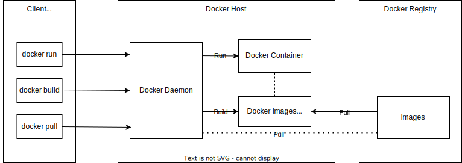

(Freie) Software für Anwendungs-Containerisierung
GUI und CLI
Open-Source Alternative: Podman
Verwendet Linux Kernel Namespaces
Links:
Lektion 6 - Containerisierung mit Docker und Kubernetes
Anwendungs-Containerisierung
- Konzept: Linux-Container
Linux-Kernel kann Prozesse durch Container / Namespaces trennen
Zuweisung von Ressourcen (Netzwerk, Files, … ) und Limits (CPU, RAM, …)
Anwendung wird im Container gestartet ⇒ Prozess wird im Namespace ausgeführt.
- Zweck: Virtualisierung
Ressourcen fremder Container sind verborgen
Geringer Overhead (RAM, CPU, …) verglichen mit VM
- Paketierung: Docker-Image, Zip-Archiv, Template
Alle nötigen Dateien, Wurzel-Dateisystem
/des ContainersDeliverable für das Deployment
- Erzeugung und Start: Entrypoint
Referenziert Programm im Template
Container-Evolution (Kubernetes)

Docker


Docker Engine
Docker Engine: Client-Server Applikation zur Image-Erstellung und Verwaltung von Containern
Docker Daemon-Prozess
dockerdDocker API für die Instruktion des Docker Daemon
Command-Line-Interface
docker(nutzt Docker API)
Docker Engine
Docker Volumes
Mechanismus für die Speicherung von Daten, die von Docker-Containern erzeugt und verwendet werden.
Bind-Mounts sind von der Verzeichnisstruktur und dem Betriebssystem des Host-Rechners abhängig
Aber: Volumes werden vollständig von Docker verwaltet.
Tmpfs-Mounts: Temporäre Speicher im Host

Docker Architektur
Docker Images
Besteht aus verschiedenen Schichten, die Änderungen am Dateisystem darstellen, sowie aus Metadaten, die zur Erstellung des Containers benötigt werden.
Die Schichten bauen aufeinander auf und erforderlich, um den Container zu erstellen.
Beispiel: Image für Apache Web Server basiert auf Ubuntu-Image
Images werden mit Dockerfiles definiert
Docker Architektur
Docker Registry
Zentraler Speicherort für Docker-Images
Öffentliche Registry: Dockerhub (https://hub.docker.com/) mit 100k+ Docker Images
Sonst auch Private Registry
Docker Architektur

Dockerfile
Die Datei Dockerfile
Instruktionen für die Erstellung von Images
Beispiel: Spring-Boot und Maven
Dockerfileim Projektordner
# Stellt eine Java-Entwicklungsumgegbung (JDK) auf der Alpine Linux-Distribution bereit
FROM eclipse-temurin:17-jdk-alpine
# Definiert eine Variable
ARG JAR_FILE=target/*.jar
# JAR-Datei wird kopiert
COPY ${JAR_FILE} app.jar
# Anwendung wird gestartet, über <<docker run>> können anschließend weitere Java-Argumente angehangen werden
ENTRYPOINT ["sh", "-c", "java ${JAVA_OPTS} -jar /app.jar ${0} ${@}"]Docker Image erstellen und hochladen
1) Erstellung Image mit Namen "example-image" und Tag "latest" aus dem Projektordner heraus
docker build -t example-image .2) Lädt das Image zum Teilen auf eine Registry hoch.
docker image push registry-host:5000/myadmin/example-image:latestDocker Container Ausführung - Beispiel
Beispiel aus vorheriger Übungung:
Aufsetzen eines RabbitMQ-Servers
docker run \
-d \
--hostname my-rabbit \
--name some-rabbit \
-p 15672:15672 \
-p 5672:5672 \
rabbitmq:3-managementWeitere interessante Flags:
-rm : Zerstört den Container nach dem Beenden
-e ANY_ENVIRONMENT_VARIABLE=CONTENT : Setzt eine env-Variable
Docker Container Befehle
Weitere hilfreiche Befehle:
docker ps- Listet alle laufenden Container aufdocker image list- Listet alle erstellten Images aufdocker image rm <image-id>- Entfernt ein Imagedocker container list- Listet alle Container aufdocker container prune- Entfernt alle gestoppten Containerdocker container stop <container-id>- Stoppt einen Containerdocker logs <container-id>- Zeigt die Logs eines Containers
Kubernetes (kurz K8s)
Open-Source-Plattform zur Verwaltung von
containerbasierten DienstenFür die Bereitstellung, Skalierung und Verwaltung
von Docker-ContainernBietet Möglichkeiten zur Ausfallsicherung an
Orchestrierung von Containern durch
Pods
Nodes
Cluster
Kubernetes Architektur
Cluster
Eine Menge von Nodes in Kubernetes, auf denen containerisierte Anwendungen laufen. Besteht aus einer Master Node und eine Anzahl von Worker Nodes.
Die Master Node ist zuständig für:
Planen und Skalieren von Anwendungen
Aufrechterhaltung des Zustands eines Clusters
Implementierung von Updates
Die Worker Nodes sind Komponenten auf denen die Anwendungen laufen.
Kubernetes Architektur
Nodes
Repräsentieren eine Arbeitsmaschine (physiche Maschine oder VM)
Enthält die für den Betrieb von Pods notwendigen Dienste
Wird von den Master-Komponenten verwaltet
Pods
Kleinste einsetzbare Einheiten
Gruppe von einem oder mehreren Containern mit gemeinsam genutzten Speicher- und Netzwerkressourcen.
Kubernetes Architektur
Service
Eine Methode zur Offenlegung einer Netzwerkanwendung, die als ein oder mehrere Pods in einem Cluster ausgeführt wird.
Es existieren unterschiedliche Service-Typen:
Cluster-IP: Zeigt den Service auf einer clusterinternen IP an. Dieser Dienst ist nur von innerhalb des Clusters erreichbar und muss explizit nach außen zugänglich gemacht werden.
NodePort: Stellt den Service auf der IP eines jeden Knotens an einem statischen Port (dem NodePort) zur Verfügung.
LoadBalancer: Stellt den Service extern über einen Load Balancer zur Verfügung.
ExternalName: Ordnet den Service dem Inhalt des Feldes externalName zu (z. B. dem Hostnamen api.foo.bar.example).
Kubernetes Architektur - Weitere Begriffe
Master-Komponenten
kube-apiserver: API für die Verwaltung von Kubernetes
etcd: Key-Value Storage für Cluster-Daten.
kube-scheduler: Komponente der Steuerungsebene, die auf neu erstellte Pods ohne zugewiesenen Nodes achtet und diese zuweist.
kube-controller-manager: Für die Verwaltung und Überwachung der verschiedenen Controller zuständig
Node-Komponenten
kubelet: Agent, der auf jedem Node läuft und sicherstellt das die Container in den Pods laufen.
kube-proxy: Läuft auf jedem Node und verwaltet Netzwerkregeln auf Nodes.
Container-Runtime: Software für die Ausführung von Containern.
Kubernetes

Quelle: Von Khtan66 - Eigenes Werk, CC BY-SA 4.0, https://commons.wikimedia.org/w/index.php?curid=53571935
Kubernetes Workload Ressources
Deployment
Ein Deployment bietet deklarative Aktualisierungen für Pods und ReplicaSets.
Ein Deployment beschreibt einen gewünschten Zustand, den der Deployment Controller kontrolliert verändert und in einen anderen Zustand überführt.
Es können Deployments definiert werden, um neue ReplicaSets zu erstellen oder um bestehende Deployments zu entfernen und alle ihre Ressourcen durch neue Deployments zu übernehmen.
ReplicaSet
Stellt sicher, dass eine bestimmte Anzahl von Pod-Replikaten zu einem bestimmten Zeitpunkt ausgeführt wird.
Kubernetes Minikube
minikube ist ein lokales Kubernetes, das zum Entwickeln
und Lernen für Kubernetes verwendet werden kann.
Alternativen: Microk8s, K0s, K3s, Kind
Kubernetes Minikube - Aufsetzen
Nun soll anhand des Beispiels aus der folgenden Übungsaufgabe ein Deployment erstellt werden.
1) Ein lokales Kubernetes mit minikube aufsetzen:
1.1) Minikube installieren:
curl -LO https://storage.googleapis.com/minikube/releases/latest/minikube-linux-amd64
sudo install minikube-linux-amd64 /usr/local/bin/minikube1.2) Minikube starten:
minikube start
1.3) Minikube Dashboard öffnen:
minikube dashboard
1.4) Tunnel erstellen:
(erstellt eine Route zu Services, die mit dem Typ LoadBalancer bereitgestellt werden)
minikube tunnel
Kubernetes - Deployment
Unser Docker-Image "example-image" wird in zwei Pods als Container innerhalb eines Deployments ausgeführt.
Mehrere Pods erhöhen die Verfügbarkeit der Anwendung bei Ausfällen.
2) Deployment-Konfiguration erstellen (ProjektOrdner/k8s/example-deployment.yml):
apiVersion: apps/v1
kind: Deployment
metadata:
name: example-deployment # Name des Deployments
spec:
replicas: 2 # Erstellt zwei Pods mit dem Container
selector:
matchLabels:
app: example-pods # Definiert Name der Pods
template:
metadata:
labels:
app: example-pods # Verweist auf die erstellten Pods
spec:
containers:
- name: example-app # Definiert den zu erstellenden Container Namen
image: example-image # Spring Docker Image, das aus unserer Anwendung erstellt wurden
ports:
- containerPort: 8080
imagePullPolicy: Never # Soll lokales Image verwenden statt es aus einer Registry zu pullenKubernetes - Service:
Für die externe Erreichbarkeit der beiden Pods muss ein Service erstellt werden.
Der LoadBalancer wird in diesem Beispiel verwendet.
3) Service erstellen (ProjektOrdner/k8s/example-service.yml):
apiVersion: v1
kind: Service
metadata:
name: example-service
spec:
selector:
app: example-pods
ports:
- port: 80
targetPort: 8080
type: LoadBalancerKubernetes - Deployment
4) Nun kann das Deployment durchgeführt werden.
4.1) Zunächst muss das lokal erstellte Image in Minikube geladen werden, da es nicht aus einer Registry gepulled wird.
minikube image load example-container
4.2) Nun wird zunächst das Deployment erstellt
kubectl apply -f example-deployment.yml
4.3) Dann der Service
kubectl apply -f example-service.yml
4.4) Nun kann über dem Minikube Dashboard unter Services auf den External-Endpoint zugegriffen werden, der die Anfragen über einen Loadbalancer an die Pods weiterleitet.
Spring Cloud Kubernetes
Projekt für Zusammenspiel zwischen Kubernetes und Spring Cloud
Discovery Client
Config Server
Links
Übung 1/2 Docker
Starten Sie den Service aus lesson06-container als Docker-Container, wählen Sie dabei ein Namen für das zu erstellende Image.
Übung 2/2 Kubernetes
Starten Sie ein lokales Kubernetes mit Hilfe von Minikube und deployen Sie ihren Container über einen Loadbalancer in einem Cluster.
Stellen Sie sicher, dass Minikube installiert ist und sowohl das Dashboard, als auch der Tunnel läuft
Erstellen Sie die notwendigen Konfigurationen (Für Deployment und Service)
Laden Sie Ihr erstelltes Image in Minikube und führen Sie das Deployment und den Service aus
Öffnen Sie nun das Dashboard und finden Sie den External-Endpoints des Service
Beobachten Sie, wie die Pods basierend auf der Lastverteilung über den Loadbalancer ausgewählt werden.
(Neuladen der Seite mit Strg+F5 → Cache Refresh → Es werden unterschiedliche Instanzen geladen)
Zusammenfassung Docker & Kubernetes
Containerisierung
Leichtgewichtige Trennung verschiedener Anwendungen durch Linux-Kernel
Ressourcensparender Betrieb getrennter Microservices
Templates, Images: Paketformat für das Deployment
Container: Etablierte Schnittstelle & Laufzeitumgebung zum Betrieb
Werkzeuge
Docker: Container erstellen und verwalten
Kubernetes: Container im Cluster betreiben
Abschluss
Fragen…
Anregungen…
Meinung…
Feedback…